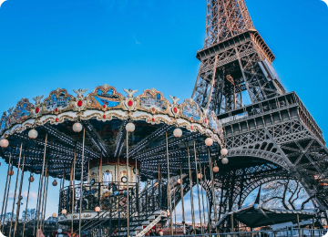
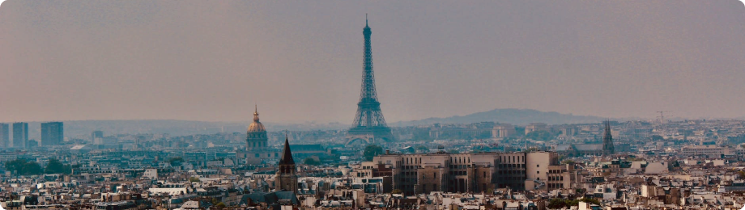

КОРПОРАТИВНЫЙ ТУРИЗМ. ПАРИЖ
Путешествовать по миру
- значит узнавать новые города, культуру и национальные особенности. А путешествовать со своими коллегами - это ещё и весело. Корпоративный туризм - это возможность провести время с коллегами, а также узнать новую культуру. Следующая остановка - Париж!Париж
– многие мечтают побывать в этом великолепном городе. И чтобы не говорили, как бы не описывали, надо самому прогуляться по его улицам, подняться на Эйфелеву башню и насладиться, свойственной только ему атмосферой. И Париж будет ваш-город света, роскоши, романтики и любви. Улицы, которые видели только с экрана ТВ, закружат и ваши ноги не устанут ходить, глаза впитывать и наслаждаться архитектурой. Парижский воздух позволит чувствовать себя причастным к истории.

Достопримечательностей в Париже множество: Базилика Сакре-Кёр или базилика Святого Сердца.- необычайно красивый католический собор, возвышающийся на холме Монмартр в Париже. знаменитый парижский Лувр, где собрана величайшая коллекция настоящих бесценных шедевров мирового искусства. Это один из крупнейших музеев всего мира, Люксембургский сад – дворцовый парк на левом берегу Сены, излюбленное место отдыха парижан и туристов. Дом Инвалидов — известный архитектурный памятник Парижа, включающий в себя целый комплекс зданий: больницу, учреждение для проживания ветеранов, музеи, собор и военный некрополь. Мулен Руж, что переводится как “красная мельница”.

- Интересные Факты:
- 57 тонн краски уходит, чтобы она не потеряла свой вид.
- Гитлер мечтал, но так и не смог попасть на Эйфелеву башню, потому что во время его пребывания в Париже сломался лифт. Как только фюрер покинул город, конструкция без ремонта снова заработала.
- На Эйфелевой башне побывало свыше 200 миллионов человек.Невозможно оставаться равнодушным при виде того, как в вечернее или ночное время суток Эйфелева башня искрится, играет, переливается огнями.